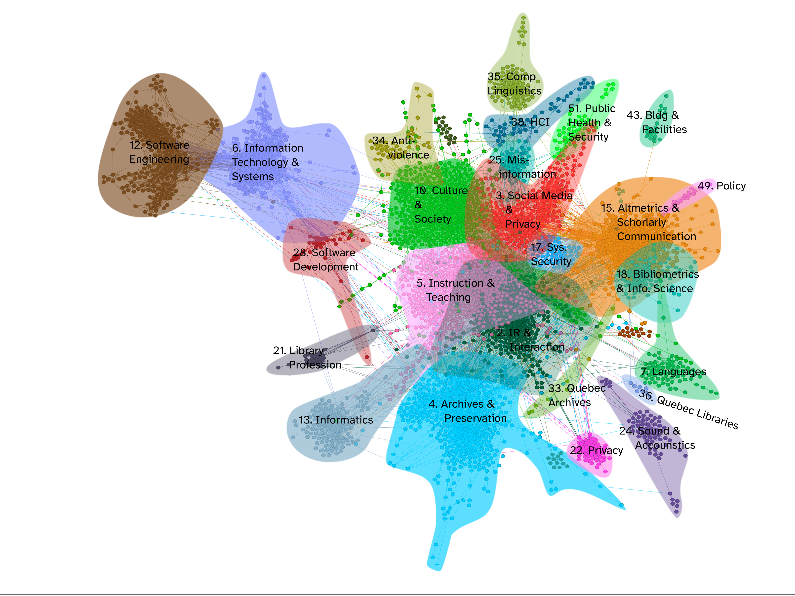
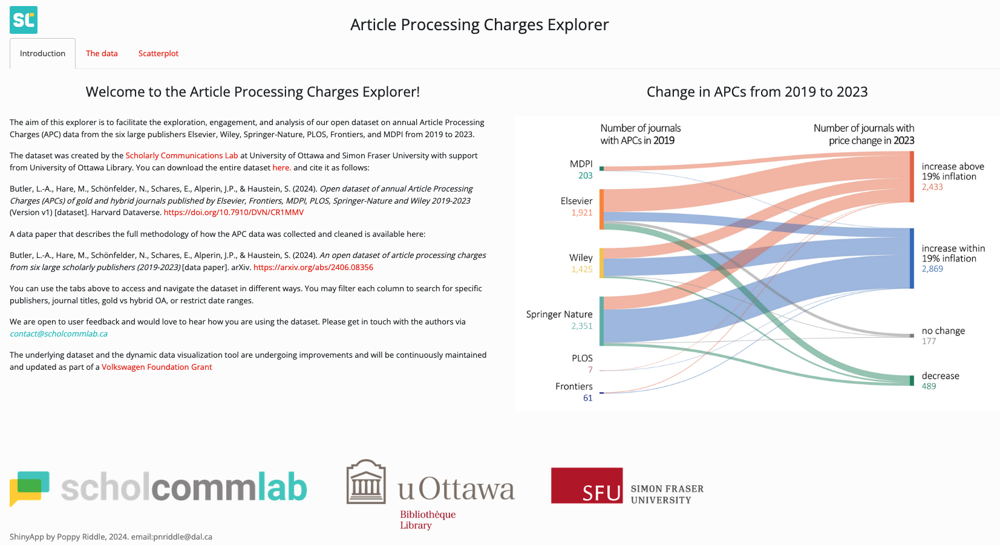
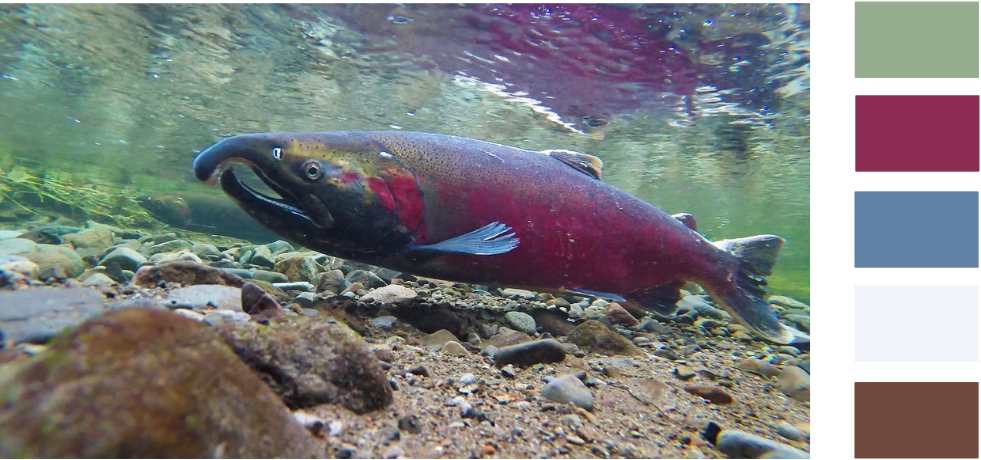
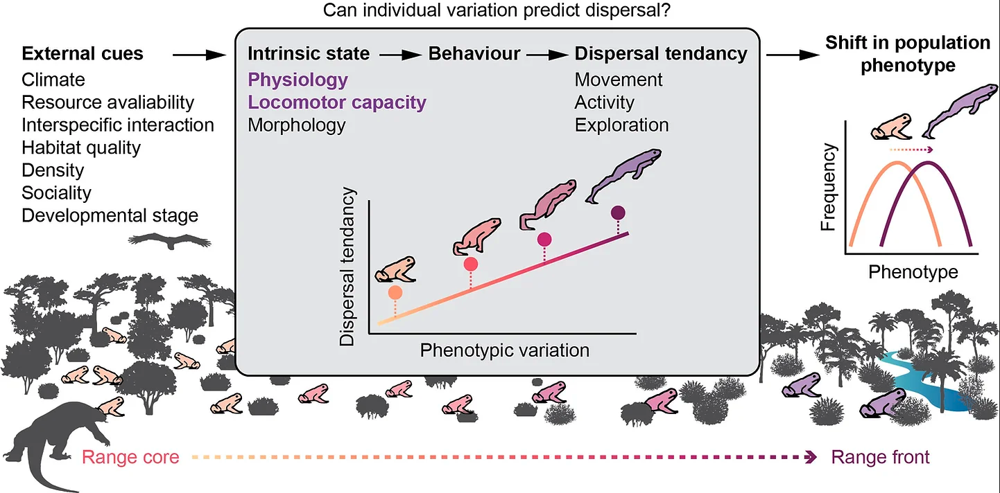
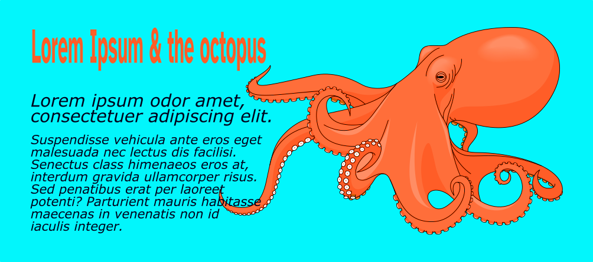

Visualization:
Free and open source options for communicating data
What we’re doing today
Data visualization & infographics
Examples of both
8 graphic design basics
Resources
About me
Poppy Riddle
- PhD candidate
- scholarly communications
- art and design


Visualization beyond Excel
What’s wrong with Excel?
Both Excel and Tableau are great for exploration and presentation of data.
Its very recognizable.
Its both the tool and the viewer.
OtherLevels: https://www.youtube.com/@OtherLevels
But, its not uncommon to see it in greyscale:
So, how can we make this a little more enticing?
Data visualization
Visualization is the practice of making results from data analysis more easily interpreted by visual or other means.
- data visualization
- information visualization
- scientific visualization- statistical graphics
- exploratory data analysis
- data artSee Nathan Yao’s Flowing Data catalog of chart types. https://flowingdata.com/chart-types/
Infographics
Infographics are intended to communicate a cohesive narrative that may include tables, graphs, diagrams, maps, etc.
They can be quite artistic to gain your attention.
How might graphic design principles help?
Limited attention: you have seconds to get and keep someone’s attention.
Limited memory: working and long-term memory
Limited perceptual channels: small number of things
Some of the elements of graphic design
Hierarchy
Scale
Color
Line
Shape
Alignment
Space
Contrast
Hierarchy
Read this first.
Read this second.
Read this third.

{kind=link}
{kind=link}
{kind=link}
{kind=link}
{kind=link}
{kind=link}
{kind=link}
{kind=link}
{kind=link}
{kind=link}
{kind=link}
{kind=link}
{kind=link}
{kind=link}
Scale
Scale affects how big or small your visualization can still be legible.
{kind=link}
Or…
You may need to move things around a bit.
{kind=link}

Color

Here are some resources:
For scientific publications: http://vrl.cs.brown.edu/color
Super easy and beautiful color palettes: https://color.adobe.com/create/color-wheel
So many more: https://sites.google.com/view/visres/special-topic-color/noteworthy-and-popular-color-resources?authuser=0
Line
Line weight helps to separate and define.
How does this look big? Or small?
Is it near or far?
{kind=link}
{kind=link}

So, you might adjust depending on your needs:
{kind=link}
Shape
What do these shapes mean?
How might they be interpreted in the context of the narrative?
See Ferdio’s 100 visualizations with just 6 data points. https://100.datavizproject.com/#
{kind=link}
{kind=link}
Alignment
Alignment helps your reader orient themselves and predict where information will be.
The grid has a dedicated following.
{kind=link}
{kind=link}
{kind=link}
Space
This is the resting space around text and visuals. It gives the eye time to rest and move between salient points.
Also called negative space, or ground.
{kind=link}
Contrast
This affects:
hierarchy
color
line
shape
type
{kind=link}
{kind=link}
Or….

8 Elements of graphic design
Hierarchy
Scale
Color
Line
Shape
Alignment
Space
Contrast
Resources
Open source or free tools
Survey from the Journal of Visualization: https://sites.google.com/view/visres/home?authuser=0
DataWrapper: https://www.datawrapper.de/charts
canva: https://www.canva.com/login
flourish: https://app.flourish.studio/templates
Draw.io: https://app.diagrams.net/
inkscape: https://inkscape.org/
Visualization galleries
A catalog of data visualization types: https://datavizcatalogue.com/
Information is beautiful: https://informationisbeautiful.net/
Visualization blogs
Data Visualization Society: https://www.datavisualizationsociety.org/
& their youtube channel: https://www.youtube.com/@DataVisualizationSociety
DataWrapper: https://blog.datawrapper.de/category/data-vis-dispatch/
Visualization Universe: http://visualizationuniverse.com/
Visualizing Data: https://www.visualisingdata.com/blog/
Fonts
Fonts: https://fonts.google.com/
Icons: https://fontawesome.com/icons
Lorum Ipsum: https://loremipsum.io/
Color
Adobe Color: https://color.adobe.com/create/color-wheel
I Want Hue: https://medialab.github.io/iwanthue/
Science related resources
BioRender: https://www.biorender.com/features
Guild of Natural Science Illustrators: https://www.gnsi.org/
Scientific American article: https://blogs.scientificamerican.com/sa-visual/visualizing-science-illustration-and-beyond/
Science Figures: open-licensed science related artwork: https://sciencefigures.org/
Advancing even further!
D3: https://d3-graph-gallery.com/
Observable: https://observablehq.com/
Mermaid:https://mermaidchart.com/
Thank you!
Feel free to reach out with any questions, comments, or other sources of inspiration!
Poppy Riddle
pnriddle@dal.ca
You can find this presentation at https://github.com/poppy-nicolette/viz_preso
Demo of Inkscape
- Improving a graph
- Creating a grid from an image
- Basics of creating assets